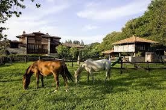
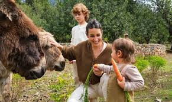

*TURISMO RURAL*
Es el que se desarrolla en zonas no urbanas. estas zonas suele incluir pero no se limita a parques nacionales, bosques, zonas rurales y zonas de montaña los viajes que tiene como fin el realizar actividades
de covivencia e interacciones con una comunidad rural, en todas aquellas expresiones sociales, cultures y productivas cotidianas de la misma en las ultimas
cotidianas de la misma enlas decadas el turismo ha crecido a nivel mundial de una forma exponcial debido a varios factores como el crecimiento economico, el abaratamiento
de los costes de los viajes, el surgimiento de nuevos mercados emisores de turistas t la facilidades de ofrece internet para buscar informacion y contratar viajes.

*CARACTERISTICAS DEL TURISMO RURAL*
- Se implementa en zonas donde la comunidad es originaria.
- Se beneficia comunidades.
- Proteger al medio ambiente, costumbres y tradiciones de la comunidades acceso local .
- En la mayoria de las comunidades donde se lleva a cabo los pobladores tienen la autoridad y se impulsa la participacion de las comunidades tratando de lograr un desarrollo sostenible.
- Se basa en la utilizacion de los recursos naturales y culturales de una zona, asi como tambien por el respeto al patrimonio del area donde se desarrolla.
- Compatibilidad en la conservacion y el desarrollo de los servicios turisticos.
- Creacion de una oferta de alojamiento, asi como de espacios de recreacion no concentrada y de pequeña escala, pero coordinada con el nivel local y comercial.
- Activacion economica de la region donde se encuentra.
- Organizacion y gestion local
*TIPOS DE TURISMO RURAL*
- Campo: Es desarrollado en el medio rural, cuya principal motivacion es conocer las costumbres y las tradiciones del hombre en el mundo rural. Se interesa por la gastronomia, la cultura popular, artesania..
- Ecoturismo:Basado en el contacto con la naturaleza sus recursos los componen las reservas y parques nacionales, es decir, una flora y fauna interesante en la zona receptiva.
- Agroturismo: Su finalidad es mostrar y explicar el proceso de produccion de las fincas agropecuarias y las agroindustrias..
- Agroecoturismo: Es aquel donde el visitante se aloja en habitacion con estandares turisticos, pero participa en las labores agricolas, convive con la comunidad y consume los alimentos recolectados con la familia normalmente, este tipo de turismo se desarrolla en pequeños pueblos que no cuentan con mas de 2.000 habitantes, o en espacios que no forman parte del entorno urbano de las ciudades.
- Ornitologico:Es el turismo centrado en el avistamiento y observacion de aves.
- Etnoturismo: Son los viajes que se relacionan con los pueblos indigenas y su habitat con el fin de aprender de su cultura y tradiciones.

*EJEMPLOS DE TURISMO RURAL*
- Rutas Rurales en Milpa Alta CDMX: Al sur de la CDMX se ofrecen seis rutas turisticas: Ruta del Mole, Ruta del Nopal, Ruta Zapatista, Ruta de la Salud, Ruta de la Fe, Ruta del Ecoturismo.
- Cuna del Mezcal en Matatlan Oaxaca: Matatlan es la capital mundial del mezcal, su experiencia rural comprende conocer la produccion del Mezcal, desde la cosecha del Agave hasta su degustacion.
- Ruta del Soconusco en Chiapas : En esta experiencia se puede disfrutar de la ruta del cafe y del cacao, en el cual podras ver el proceso desde la recoleccion hecha por los habitantes, hasta saborearlo en una finca tradicional acompañado de un rico desayuno.
- cefields Parkway en Canada:Comprende un area de 232 Km2 a traves del corazon de la Montañas Rocosas Canadienses que ofrece el acceso a un vasto desierto de los lagos de las montañas virgenes, glaciares antiguos y amplios valles profundos que se situan entre las Provincias de Alberta y Columbia Britanica.
"EL TURISMO REPRESENTA EL MEDIO POR EXCELENCIA PARA PRESRVAR LA IDENTIDAD Y PONER EN JUSTO VALOR EL PATRIMONIO NACIONAL"
gomez gomez cleydi y@reni
6105 P.T.B informatica
02-05-2024